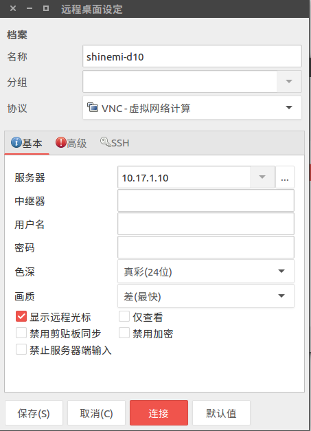
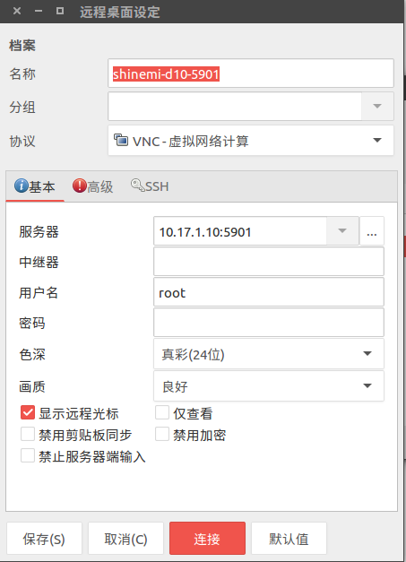
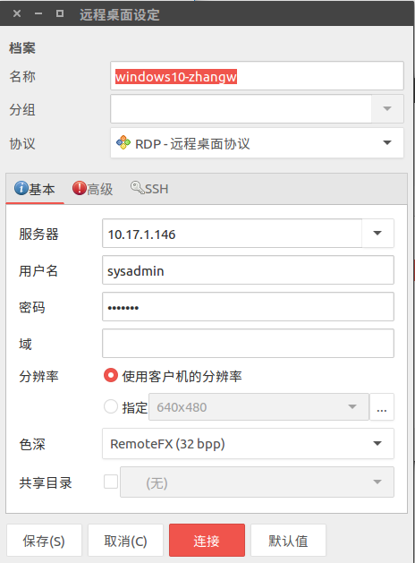
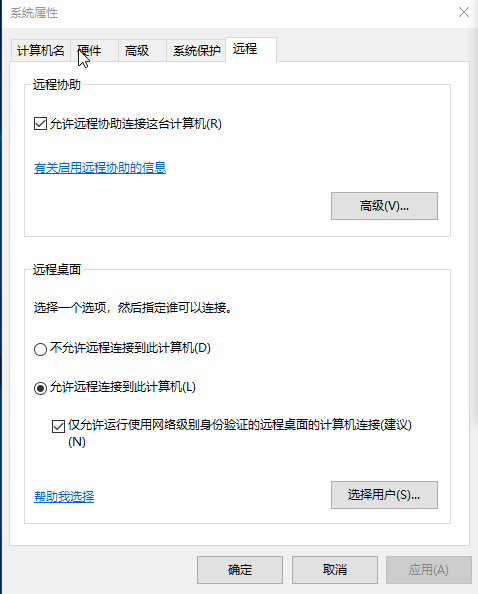
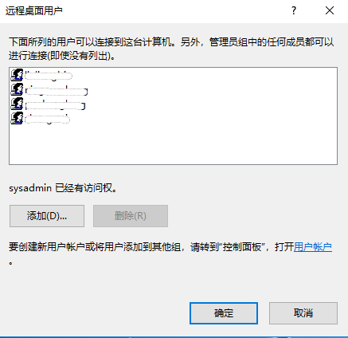

remmina—一款远程连接软件，支持 RDP、VNC、NX、XDMCP 和 SSH



remmina 只有管理员用户才能通过RDP协议远程连接？
修改windows10上的远程连接配置即可，如下图所示


ubuntu 远程连接 windows
sudo apt-get install rdesktoprdesktop -f -a 16 -T Win -u administrator -p a host:port-u 指定用户名
-p 密码
-f 默认全屏， 需要用Ctrl-Alt-Enter组合键进行全屏模式切换。
-a 16表示使用16 bit色
host windows服务器地址
port 端口号（默认是3389，可以不用写）
-r clipboard:PRIMARYCLIPBOARD 剪切板
-r sound 启动本地音频设备
-r disk:sunray=/home/wayde 共享目录